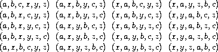

3.4 Concurrency: Time Is of the Essence
We've seen the power of computational objects with local state as tools for modeling. Yet, as section 3.1.3 warned, this power extracts a price: the loss of referential transparency, giving rise to a thicket of questions about sameness and change, and the need to abandon the substitution model of evaluation in favor of the more intricate environment model.
The central issue lurking beneath the complexity of state, sameness, and change is that by introducing assignment we are forced to admit time into our computational models. Before we introduced assignment, all our programs were timeless, in the sense that any expression that has a value always has the same value. In contrast, recall the example of modeling withdrawals from a bank account and returning the resulting balance, introduced at the beginning of section 3.1.1:
(withdraw 25)
75
(withdraw 25)
50
Here successive evaluations of the same expression yield different
values. This behavior arises from the fact that the execution of
assignment statements (in this case, assignments to the variable
balance) delineates moments in time when values change. The result
of evaluating an expression depends not only on the expression itself,
but also on whether the evaluation occurs before or after these moments.
Building models in terms of computational objects with local state
forces us to confront time as an essential concept in programming.
We can go further in structuring computational models to match our perception of the physical world. Objects in the world do not change one at a time in sequence. Rather we perceive them as acting concurrently -- all at once. So it is often natural to model systems as collections of computational processes that execute concurrently. Just as we can make our programs modular by organizing models in terms of objects with separate local state, it is often appropriate to divide computational models into parts that evolve separately and concurrently. Even if the programs are to be executed on a sequential computer, the practice of writing programs as if they were to be executed concurrently forces the programmer to avoid inessential timing constraints and thus makes programs more modular.
In addition to making programs more modular, concurrent computation can provide a speed advantage over sequential computation. Sequential computers execute only one operation at a time, so the amount of time it takes to perform a task is proportional to the total number of operations performed.^[34]{.small}^ However, if it is possible to decompose a problem into pieces that are relatively independent and need to communicate only rarely, it may be possible to allocate pieces to separate computing processors, producing a speed advantage proportional to the number of processors available.
Unfortunately, the complexities introduced by assignment become even more problematic in the presence of concurrency. The fact of concurrent execution, either because the world operates in parallel or because our computers do, entails additional complexity in our understanding of time.
3.4.1 The Nature of Time in Concurrent Systems
On the surface, time seems straightforward. It is an
ordering imposed on
events.^[35]{.small}^
For any events A and B, either A occurs before B, A and B
are simultaneous, or A occurs after B. For instance, returning to
the bank account example, suppose that Peter withdraws $10 and Paul
withdraws $25 from a joint account that initially
contains $100, leaving $65 in the account. Depending on the order of
the two withdrawals, the sequence of balances in the account is either
$100  $90
$65 or $100
$75
$65. In a computer implementation of
the banking system, this changing sequence of balances could be modeled
by successive assignments to a variable
$90
$65 or $100
$75
$65. In a computer implementation of
the banking system, this changing sequence of balances could be modeled
by successive assignments to a variable balance.
In complex situations, however, such a view can be problematic. Suppose that Peter and Paul, and other people besides, are accessing the same bank account through a network of banking machines distributed all over the world. The actual sequence of balances in the account will depend critically on the detailed timing of the accesses and the details of the communication among the machines.
This indeterminacy in the order of events can pose
serious problems in the design of concurrent systems. For instance,
suppose that the withdrawals made by Peter and Paul are implemented as
two separate processes sharing a common variable balance, each process
specified by the procedure given in
section 3.1.1:
(define (withdraw amount)
(if (>= balance amount)
(begin (set! balance (- balance amount))
balance)
"Insufficient funds"))
If the two processes operate independently, then Peter might test the balance and attempt to withdraw a legitimate amount. However, Paul might withdraw some funds in between the time that Peter checks the balance and the time Peter completes the withdrawal, thus invalidating Peter's test.
Things can be worse still. Consider the expression
(set! balance (- balance amount))
executed as part of each withdrawal process. This consists of three
steps: (1) accessing the value of the balance variable; (2) computing
the new balance; (3) setting balance to this new value. If Peter and
Paul's withdrawals execute this statement concurrently, then the two
withdrawals might interleave the order in which they access balance
and set it to the new value.
The timing diagram in figure 3.29 depicts
an order of events where balance starts at 100, Peter withdraws 10,
Paul withdraws 25, and yet the final value of balance is 75. As shown
in the diagram, the reason for this anomaly is that Paul's assignment
of 75 to balance is made under the assumption that the value of
balance to be decremented is 100. That assumption, however, became
invalid when Peter changed balance to 90. This is a catastrophic
failure for the banking system, because the total amount of money in the
system is not conserved. Before the transactions, the total amount of
money was $100. Afterwards, Peter has $10, Paul has $25, and the bank
has
$75.^[36]{.small}^
The general phenomenon illustrated here is that several processes may share a common state variable. What makes this complicated is that more than one process may be trying to manipulate the shared state at the same time. For the bank account example, during each transaction, each customer should be able to act as if the other customers did not exist. When a customer changes the balance in a way that depends on the balance, he must be able to assume that, just before the moment of change, the balance is still what he thought it was.
Correct behavior of concurrent programs
The above example typifies the subtle bugs that can
creep into concurrent programs. The root of this complexity lies in the
assignments to variables that are shared among the different processes.
We already know that we must be careful in writing programs that use
set!, because the results of a computation depend on the order in
which the assignments
occur.^[37]{.small}^
With concurrent processes we must be especially careful about
assignments, because we may not be able to control the order of the
assignments made by the different processes. If several such changes
might be made concurrently (as with two depositors accessing a joint
account) we need some way to ensure that our system behaves correctly.
For example, in the case of withdrawals from a joint bank account, we
must ensure that money is conserved. To make concurrent programs behave
correctly, we may have to place some restrictions on concurrent
execution.

Figure 3.29: Timing diagram showing how interleaving the order of events in two banking withdrawals can lead to an incorrect final balance.
One possible restriction on concurrency would stipulate that no two operations that change any shared state variables can occur at the same time. This is an extremely stringent requirement. For distributed banking, it would require the system designer to ensure that only one transaction could proceed at a time. This would be both inefficient and overly conservative. Figure 3.30 shows Peter and Paul sharing a bank account, where Paul has a private account as well. The diagram illustrates two withdrawals from the shared account (one by Peter and one by Paul) and a deposit to Paul's private account.^[38]{.small}^ The two withdrawals from the shared account must not be concurrent (since both access and update the same account), and Paul's deposit and withdrawal must not be concurrent (since both access and update the amount in Paul's wallet). But there should be no problem permitting Paul's deposit to his private account to proceed concurrently with Peter's withdrawal from the shared account.

Figure 3.30: Concurrent deposits and withdrawals from a joint account in Bank1 and a private account in Bank2.
A less stringent restriction on concurrency would ensure that a concurrent system produces the same result as if the processes had run sequentially in some order. There are two important aspects to this requirement. First, it does not require the processes to actually run sequentially, but only to produce results that are the same as if they had run sequentially. For the example in figure 3.30, the designer of the bank account system can safely allow Paul's deposit and Peter's withdrawal to happen concurrently, because the net result will be the same as if the two operations had happened sequentially. Second, there may be more than one possible ``correct'' result produced by a concurrent program, because we require only that the result be the same as for some sequential order. For example, suppose that Peter and Paul's joint account starts out with $100, and Peter deposits $40 while Paul concurrently withdraws half the money in the account. Then sequential execution could result in the account balance being either $70 or $90 (see exercise 3.38).^[39]{.small}^](book-Z-H-23.html#footnote_Temp_411)
There are still weaker requirements for correct execution of concurrent programs. A program for simulating diffusion (say, the flow of heat in an object) might consist of a large number of processes, each one representing a small volume of space, that update their values concurrently. Each process repeatedly changes its value to the average of its own value and its neighbors' values. This algorithm converges to the right answer independent of the order in which the operations are done; there is no need for any restrictions on concurrent use of the shared values.
Exercise 3.38. Suppose that Peter, Paul, and Mary share a joint bank account that initially contains $100. Concurrently, Peter deposits $10, Paul withdraws $20, and Mary withdraws half the money in the account, by executing the following commands:
Peter: (set! balance (+ balance 10))
Paul: (set! balance (- balance 20))
Mary: (set! balance (- balance (/ balance 2)))
a. List all the different possible values for balance after these
three transactions have been completed, assuming that the banking system
forces the three processes to run sequentially in some order.
b. What are some other values that could be produced if the system allows the processes to be interleaved? Draw timing diagrams like the one in figure 3.29 to explain how these values can occur.
3.4.2 Mechanisms for Controlling Concurrency
We've seen that the difficulty in dealing with concurrent processes is rooted in the need to consider the interleaving of the order of events in the different processes. For example, suppose we have two processes, one with three ordered events (a,b,c) and one with three ordered events (x,y,z). If the two processes run concurrently, with no constraints on how their execution is interleaved, then there are 20 different possible orderings for the events that are consistent with the individual orderings for the two processes:

As programmers designing this system, we would have to consider the effects of each of these 20 orderings and check that each behavior is acceptable. Such an approach rapidly becomes unwieldy as the numbers of processes and events increase.
A more practical approach to the design of concurrent systems is to devise general mechanisms that allow us to constrain the interleaving of concurrent processes so that we can be sure that the program behavior is correct. Many mechanisms have been developed for this purpose. In this section, we describe one of them, the serializer.
Serializing access to shared state
Serialization implements the following idea: Processes will execute concurrently, but there will be certain collections of procedures that cannot be executed concurrently. More precisely, serialization creates distinguished sets of procedures such that only one execution of a procedure in each serialized set is permitted to happen at a time. If some procedure in the set is being executed, then a process that attempts to execute any procedure in the set will be forced to wait until the first execution has finished.
We can use serialization to control access to shared variables. For example, if we want to update a shared variable based on the previous value of that variable, we put the access to the previous value of the variable and the assignment of the new value to the variable in the same procedure. We then ensure that no other procedure that assigns to the variable can run concurrently with this procedure by serializing all of these procedures with the same serializer. This guarantees that the value of the variable cannot be changed between an access and the corresponding assignment.
Serializers in Scheme
To make the above mechanism more concrete, suppose that we have extended
Scheme to include a procedure called parallel-execute:
(parallel-execute <p~1~> <p~2~> ... <p~k~>)
Each <p> must be a procedure of no arguments. Parallel-execute
creates a separate process for each <p>, which applies <p> (to
no arguments). These processes all run
concurrently.^[40]{.small}^
As an example of how this is used, consider
(define x 10)
(parallel-execute (lambda () (set! x (* x x)))
(lambda () (set! x (+ x 1))))
This creates two concurrent processes -- P1, which sets x to x
times x, and P2, which increments x. After execution is
complete, x will be left with one of five possible values, depending
on the interleaving of the events of P1 and P2:
101: P1 sets x to 100 and then P2 increments x to 101.
121: P2 increments x to 11 and then P1 sets x to x times x.
110: P2 changes x from 10 to 11 between the two times that P1 accesses the value of x during the evaluation of (* x x).
11: P2 accesses x, then P1 sets x to 100, then P2 sets x.
100: P1 accesses x (twice), then P2 sets x to 11, then P1 sets x.
We can constrain the concurrency by using serialized procedures, which
are created by serializers. Serializers are constructed by
make-serializer, whose implementation is given below. A serializer
takes a procedure as argument and returns a serialized procedure that
behaves like the original procedure. All calls to a given serializer
return serialized procedures in the same set.
Thus, in contrast to the example above, executing
(define x 10)
(define s (make-serializer))
(parallel-execute (s (lambda () (set! x (* x x))))
(s (lambda () (set! x (+ x 1)))))
can produce only two possible values for x, 101 or 121. The other
possibilities are eliminated, because the execution of P1 and P2
cannot be interleaved.
Here is a version of the make-account procedure from
section 3.1.1, where the deposits and
withdrawals have been serialized:
(define (make-account balance)
(define (withdraw amount)
(if (>= balance amount)
(begin (set! balance (- balance amount))
balance)
"Insufficient funds"))
(define (deposit amount)
(set! balance (+ balance amount))
balance)
(let ((protected (make-serializer)))
(define (dispatch m)
(cond ((eq? m 'withdraw) (protected withdraw))
((eq? m 'deposit) (protected deposit))
((eq? m 'balance) balance)
(else (error "Unknown request -- MAKE-ACCOUNT"
m))))
dispatch))
With this implementation, two processes cannot be withdrawing from or depositing into a single account concurrently. This eliminates the source of the error illustrated in figure 3.29, where Peter changes the account balance between the times when Paul accesses the balance to compute the new value and when Paul actually performs the assignment. On the other hand, each account has its own serializer, so that deposits and withdrawals for different accounts can proceed concurrently.
Exercise 3.39. Which of the five possibilities in the parallel execution shown above remain if we instead serialize execution as follows:
(define x 10)
(define s (make-serializer))
(parallel-execute (lambda () (set! x ((s (lambda () (* x x))))))
(s (lambda () (set! x (+ x 1)))))
Exercise 3.40. Give all possible values of x that
can result from executing
(define x 10)
(parallel-execute (lambda () (set! x (* x x)))
(lambda () (set! x (* x x x))))
Which of these possibilities remain if we instead use serialized procedures:
(define x 10)
(define s (make-serializer))
(parallel-execute (s (lambda () (set! x (* x x))))
(s (lambda () (set! x (* x x x)))))
Exercise 3.41. Ben Bitdiddle worries that it would be better to implement the bank account as follows (where the commented line has been changed):
(define (make-account balance)
(define (withdraw amount)
(if (>= balance amount)
(begin (set! balance (- balance amount))
balance)
"Insufficient funds"))
(define (deposit amount)
(set! balance (+ balance amount))
balance)
;; continued on next page
(let ((protected (make-serializer)))
(define (dispatch m)
(cond ((eq? m 'withdraw) (protected withdraw))
((eq? m 'deposit) (protected deposit))
((eq? m 'balance)
((protected (lambda () balance)))) ; serialized
(else (error "Unknown request -- MAKE-ACCOUNT"
m))))
dispatch))
because allowing unserialized access to the bank balance can result in anomalous behavior. Do you agree? Is there any scenario that demonstrates Ben's concern?
Exercise 3.42. Ben Bitdiddle suggests that it's a
waste of time to create a new serialized procedure in response to every
withdraw and deposit message. He says that make-account could be
changed so that the calls to protected are done outside the dispatch
procedure. That is, an account would return the same serialized
procedure (which was created at the same time as the account) each time
it is asked for a withdrawal procedure.
(define (make-account balance)
(define (withdraw amount)
(if (>= balance amount)
(begin (set! balance (- balance amount))
balance)
"Insufficient funds"))
(define (deposit amount)
(set! balance (+ balance amount))
balance)
(let ((protected (make-serializer)))
(let ((protected-withdraw (protected withdraw))
(protected-deposit (protected deposit)))
(define (dispatch m)
(cond ((eq? m 'withdraw) protected-withdraw)
((eq? m 'deposit) protected-deposit)
((eq? m 'balance) balance)
(else (error "Unknown request -- MAKE-ACCOUNT"
m))))
dispatch)))
Is this a safe change to make? In particular, is there any difference in
what concurrency is allowed by these two versions of make-account ?
Complexity of using multiple shared resources
Serializers provide a powerful abstraction that helps isolate the complexities of concurrent programs so that they can be dealt with carefully and (hopefully) correctly. However, while using serializers is relatively straightforward when there is only a single shared resource (such as a single bank account), concurrent programming can be treacherously difficult when there are multiple shared resources.
To illustrate one of the difficulties that can arise, suppose we wish to swap the balances in two bank accounts. We access each account to find the balance, compute the difference between the balances, withdraw this difference from one account, and deposit it in the other account. We could implement this as follows:^[41]{.small}^
(define (exchange account1 account2)
(let ((difference (- (account1 'balance)
(account2 'balance))))
((account1 'withdraw) difference)
((account2 'deposit) difference)))
This procedure works well when only a single process is trying to do the
exchange. Suppose, however, that Peter and Paul both have access to
accounts a1, a2, and a3, and that Peter exchanges a1 and a2
while Paul concurrently exchanges a1 and a3. Even with account
deposits and withdrawals serialized for individual accounts (as in the
make-account procedure shown above in this section), exchange can
still produce incorrect results. For example, Peter might compute the
difference in the balances for a1 and a2, but then Paul might change
the balance in a1 before Peter is able to complete the
exchange.^[42]{.small}^
For correct behavior, we must arrange for the exchange procedure to
lock out any other concurrent accesses to the accounts during the entire
time of the exchange.
One way we can accomplish this is by using both accounts' serializers
to serialize the entire exchange procedure. To do this, we will
arrange for access to an account's serializer. Note that we are
deliberately breaking the modularity of the bank-account object by
exposing the serializer. The following version of make-account is
identical to the original version given in
section 3.1.1, except that a serializer
is provided to protect the balance variable, and the serializer is
exported via message passing:
(define (make-account-and-serializer balance)
(define (withdraw amount)
(if (>= balance amount)
(begin (set! balance (- balance amount))
balance)
"Insufficient funds"))
(define (deposit amount)
(set! balance (+ balance amount))
balance)
(let ((balance-serializer (make-serializer)))
(define (dispatch m)
(cond ((eq? m 'withdraw) withdraw)
((eq? m 'deposit) deposit)
((eq? m 'balance) balance)
((eq? m 'serializer) balance-serializer)
(else (error "Unknown request -- MAKE-ACCOUNT"
m))))
dispatch))
We can use this to do serialized deposits and withdrawals. However, unlike our earlier serialized account, it is now the responsibility of each user of bank-account objects to explicitly manage the serialization, for example as follows:^[43]{.small}^
(define (deposit account amount)
(let ((s (account 'serializer))
(d (account 'deposit)))
((s d) amount)))
Exporting the serializer in this way gives us enough flexibility to
implement a serialized exchange program. We simply serialize the
original exchange procedure with the serializers for both accounts:
(define (serialized-exchange account1 account2)
(let ((serializer1 (account1 'serializer))
(serializer2 (account2 'serializer)))
((serializer1 (serializer2 exchange))
account1
account2)))
Exercise 3.43. Suppose that the balances in three
accounts start out as $10, $20, and $30, and that multiple processes
run, exchanging the balances in the accounts. Argue that if the
processes are run sequentially, after any number of concurrent
exchanges, the account balances should be $10, $20, and $30 in some
order. Draw a timing diagram like the one in
figure 3.29 to show how this condition
can be violated if the exchanges are implemented using the first version
of the account-exchange program in this section. On the other hand,
argue that even with this exchange program, the sum of the balances in
the accounts will be preserved. Draw a timing diagram to show how even
this condition would be violated if we did not serialize the
transactions on individual accounts.
Exercise 3.44. Consider the problem
of transferring an amount from one account to another. Ben Bitdiddle
claims that this can be accomplished with the following procedure, even
if there are multiple people concurrently transferring money among
multiple accounts, using any account mechanism that serializes deposit
and withdrawal transactions, for example, the version of make-account
in the text above.
(define (transfer from-account to-account amount)
((from-account 'withdraw) amount)
((to-account 'deposit) amount))
Louis Reasoner claims that there is a problem here, and that we need to
use a more sophisticated method, such as the one required for dealing
with the exchange problem. Is Louis right? If not, what is the essential
difference between the transfer problem and the exchange problem? (You
should assume that the balance in from-account is at least amount.)
Exercise 3.45. Louis Reasoner thinks our
bank-account system is unnecessarily complex and error-prone now that
deposits and withdrawals aren't automatically serialized. He suggests
that make-account-and-serializer should have exported the serializer
(for use by such procedures as serialized-exchange) in addition to
(rather than instead of) using it to serialize accounts and deposits as
make-account did. He proposes to redefine accounts as follows:
(define (make-account-and-serializer balance)
(define (withdraw amount)
(if (>= balance amount)
(begin (set! balance (- balance amount))
balance)
"Insufficient funds"))
(define (deposit amount)
(set! balance (+ balance amount))
balance)
(let ((balance-serializer (make-serializer)))
(define (dispatch m)
(cond ((eq? m 'withdraw) (balance-serializer withdraw))
((eq? m 'deposit) (balance-serializer deposit))
((eq? m 'balance) balance)
((eq? m 'serializer) balance-serializer)
(else (error "Unknown request -- MAKE-ACCOUNT"
m))))
dispatch))
Then deposits are handled as with the original make-account:
(define (deposit account amount)
((account 'deposit) amount))
Explain what is wrong with Louis's reasoning. In particular, consider
what happens when serialized-exchange is called.
Implementing serializers
We implement serializers in terms of a more primitive
synchronization mechanism called a mutex. A mutex is an
object that supports two operations -- the mutex can be
acquired, and the mutex can be
released. Once a mutex has been acquired, no other
acquire operations on that mutex may proceed until the mutex is
released.^[44]{.small}^
In our implementation, each serializer has an associated mutex. Given a
procedure p, the serializer returns a procedure that acquires the
mutex, runs p, and then releases the mutex. This ensures that only one
of the procedures produced by the serializer can be running at once,
which is precisely the serialization property that we need to guarantee.
(define (make-serializer)
(let ((mutex (make-mutex)))
(lambda (p)
(define (serialized-p . args)
(mutex 'acquire)
(let ((val (apply p args)))
(mutex 'release)
val))
serialized-p)))
The mutex is a mutable object (here we'll use a one-element list, which we'll refer to as a cell) that can hold the value true or false. When the value is false, the mutex is available to be acquired. When the value is true, the mutex is unavailable, and any process that attempts to acquire the mutex must wait.
Our mutex constructor make-mutex begins by initializing the cell
contents to false. To acquire the mutex, we test the cell. If the mutex
is available, we set the cell contents to true and proceed. Otherwise,
we wait in a loop, attempting to acquire over and over again, until we
find that the mutex is
available.^[45]{.small}^
To release the mutex, we set the cell contents to false.
(define (make-mutex)
(let ((cell (list false)))
(define (the-mutex m)
(cond ((eq? m 'acquire)
(if (test-and-set! cell)
(the-mutex 'acquire))) ; retry
((eq? m 'release) (clear! cell))))
the-mutex))
(define (clear! cell)
(set-car! cell false))
Test-and-set! tests the cell and returns the result of the test. In
addition, if the test was false, test-and-set! sets the cell contents
to true before returning false. We can express this behavior as the
following procedure:
(define (test-and-set! cell)
(if (car cell)
true
(begin (set-car! cell true)
false)))
However, this implementation of test-and-set! does not suffice as it
stands. There is a crucial subtlety here, which is the essential place
where concurrency control enters the system: The test-and-set!
operation must be performed atomically. That is, we
must guarantee that, once a process has tested the cell and found it to
be false, the cell contents will actually be set to true before any
other process can test the cell. If we do not make this guarantee, then
the mutex can fail in a way similar to the bank-account failure in
figure 3.29. (See
exercise 3.46.)
The actual implementation of test-and-set! depends on the details of
how our system runs concurrent processes. For example, we might be
executing concurrent processes on a sequential processor using a
time-slicing mechanism that cycles through the processes,
permitting each process to run for a short time before interrupting it
and moving on to the next process. In that case, test-and-set! can
work by disabling time slicing during the testing and
setting.^[46]{.small}^
Alternatively, multiprocessing computers provide instructions that
support atomic operations directly in
hardware.^[47]{.small}^
Exercise 3.46. Suppose that we implement
test-and-set! using an ordinary procedure as shown in the text,
without attempting to make the operation atomic. Draw a timing diagram
like the one in figure 3.29 to
demonstrate how the mutex implementation can fail by allowing two
processes to acquire the mutex at the same time.
Exercise 3.47. A semaphore (of size n) is a generalization of a mutex. Like a mutex, a semaphore supports acquire and release operations, but it is more general in that up to n processes can acquire it concurrently. Additional processes that attempt to acquire the semaphore must wait for release operations. Give implementations of semaphores
a. in terms of mutexes
b. in terms of atomic test-and-set! operations.
Deadlock
Now that we have seen how to implement
serializers, we can see that account exchanging still has a problem,
even with the serialized-exchange procedure above. Imagine that Peter
attempts to exchange a1 with a2 while Paul concurrently attempts to
exchange a2 with a1. Suppose that Peter's process reaches the point
where it has entered a serialized procedure protecting a1 and, just
after that, Paul's process enters a serialized procedure protecting
a2. Now Peter cannot proceed (to enter a serialized procedure
protecting a2) until Paul exits the serialized procedure protecting
a2. Similarly, Paul cannot proceed until Peter exits the serialized
procedure protecting a1. Each process is stalled forever, waiting for
the other. This situation is called a deadlock. Deadlock is always a
danger in systems that provide concurrent access to multiple shared
resources.
One way to avoid the deadlock in this situation is to
give each account a unique identification number and rewrite
serialized-exchange so that a process will always attempt to enter a
procedure protecting the lowest-numbered account first. Although this
method works well for the exchange problem, there are other situations
that require more sophisticated deadlock-avoidance techniques, or where
deadlock cannot be avoided at all. (See
exercises 3.48
and 3.49.)^[48]{.small}^
Exercise 3.48. Explain in detail why
the deadlock-avoidance method described above, (i.e., the accounts are
numbered, and each process attempts to acquire the smaller-numbered
account first) avoids deadlock in the exchange problem. Rewrite
serialized-exchange to incorporate this idea. (You will also need to
modify make-account so that each account is created with a number,
which can be accessed by sending an appropriate message.)
Exercise 3.49. Give a scenario where the deadlock-avoidance mechanism described above does not work. (Hint: In the exchange problem, each process knows in advance which accounts it will need to get access to. Consider a situation where a process must get access to some shared resources before it can know which additional shared resources it will require.)
Concurrency, time, and communication
We've seen how programming concurrent systems requires controlling the ordering of events when different processes access shared state, and we've seen how to achieve this control through judicious use of serializers. But the problems of concurrency lie deeper than this, because, from a fundamental point of view, it's not always clear what is meant by ``shared state.''
Mechanisms such as test-and-set! require processes to examine a global
shared flag at arbitrary times. This is problematic and inefficient to
implement in modern high-speed processors, where due to optimization
techniques such as pipelining and cached memory, the contents of memory
may not be in a consistent state at every instant. In contemporary
multiprocessing systems, therefore, the serializer paradigm is being
supplanted by new approaches to concurrency
control.^[49]{.small}^
The problematic aspects of shared state also arise in large, distributed systems. For instance, imagine a distributed banking system where individual branch banks maintain local values for bank balances and periodically compare these with values maintained by other branches. In such a system the value of ``the account balance'' would be undetermined, except right after synchronization. If Peter deposits money in an account he holds jointly with Paul, when should we say that the account balance has changed -- when the balance in the local branch changes, or not until after the synchronization? And if Paul accesses the account from a different branch, what are the reasonable constraints to place on the banking system such that the behavior is ``correct''? The only thing that might matter for correctness is the behavior observed by Peter and Paul individually and the ``state'' of the account immediately after synchronization. Questions about the ``real'' account balance or the order of events between synchronizations may be irrelevant or meaningless.^[50]{.small}^
The basic phenomenon here is that synchronizing different processes, establishing shared state, or imposing an order on events requires communication among the processes. In essence, any notion of time in concurrency control must be intimately tied to communication.^[51]{.small}^ It is intriguing that a similar connection between time and communication also arises in the Theory of Relativity, where the speed of light (the fastest signal that can be used to synchronize events) is a fundamental constant relating time and space. The complexities we encounter in dealing with time and state in our computational models may in fact mirror a fundamental complexity of the physical universe.
^[34]{.small}^](book-Z-H-23.html#call_footnote_Temp_405) Most real processors actually execute a few operations at a time, following a strategy called pipelining. Although this technique greatly improves the effective utilization of the hardware, it is used only to speed up the execution of a sequential instruction stream, while retaining the behavior of the sequential program.
^[35]{.small}^](book-Z-H-23.html#call_footnote_Temp_406) To quote some graffiti seen on a Cambridge building wall: ``Time is a device that was invented to keep everything from happening at once.''
^[36]{.small}^](book-Z-H-23.html#call_footnote_Temp_407)
An even worse failure for this system could occur if the two set!
operations attempt to change the balance simultaneously, in which case
the actual data appearing in memory might end up being a random
combination of the information being written by the two processes. Most
computers have interlocks on the primitive memory-write operations,
which protect against such simultaneous access. Even this seemingly
simple kind of protection, however, raises implementation challenges in
the design of multiprocessing computers, where elaborate
cache-coherence protocols are required to ensure that
the various processors will maintain a consistent view of memory
contents, despite the fact that data may be replicated (``cached'')
among the different processors to increase the speed of memory access.
^[37]{.small}^](book-Z-H-23.html#call_footnote_Temp_409) The factorial program in section 3.1.3 illustrates this for a single sequential process.
^[38]{.small}^](book-Z-H-23.html#call_footnote_Temp_410) The columns show the contents of Peter's wallet, the joint account (in Bank1), Paul's wallet, and Paul's private account (in Bank2), before and after each withdrawal (W) and deposit (D). Peter withdraws $10 from Bank1; Paul deposits $5 in Bank2, then withdraws $25 from Bank1.
^[39]{.small}^](book-Z-H-23.html#call_footnote_Temp_411) A more formal way to express this idea is to say that concurrent programs are inherently nondeterministic. That is, they are described not by single-valued functions, but by functions whose results are sets of possible values. In section 4.3 we will study a language for expressing nondeterministic computations.
^[40]{.small}^](book-Z-H-23.html#call_footnote_Temp_415)
Parallel-execute is not part of standard Scheme, but it can be
implemented in MIT Scheme. In our implementation, the new concurrent
processes also run concurrently with the original Scheme process. Also,
in our implementation, the value returned by parallel-execute is a
special control object that can be used to halt the newly created
processes.
^[41]{.small}^](book-Z-H-23.html#call_footnote_Temp_421)
We have simplified exchange by exploiting the fact that our deposit
message accepts negative amounts. (This is a serious bug in our banking
system!)
^[42]{.small}^](book-Z-H-23.html#call_footnote_Temp_422) If the account balances start out as $10, $20, and $30, then after any number of concurrent exchanges, the balances should still be $10, $20, and $30 in some order. Serializing the deposits to individual accounts is not sufficient to guarantee this. See exercise 3.43.
^[43]{.small}^](book-Z-H-23.html#call_footnote_Temp_423) Exercise 3.45 investigates why deposits and withdrawals are no longer automatically serialized by the account.
^[44]{.small}^](book-Z-H-23.html#call_footnote_Temp_428) The term ``mutex'' is an abbreviation for mutual exclusion. The general problem of arranging a mechanism that permits concurrent processes to safely share resources is called the mutual exclusion problem. Our mutex is a simple variant of the semaphore mechanism (see exercise 3.47), which was introduced in the ``THE'' Multiprogramming System developed at the Technological University of Eindhoven and named for the university's initials in Dutch (Dijkstra 1968a). The acquire and release operations were originally called P and V, from the Dutch words passeren (to pass) and vrijgeven (to release), in reference to the semaphores used on railroad systems. Dijkstra's classic exposition (1968b) was one of the first to clearly present the issues of concurrency control, and showed how to use semaphores to handle a variety of concurrency problems.
^[45]{.small}^](book-Z-H-23.html#call_footnote_Temp_429) In most time-shared operating systems, processes that are blocked by a mutex do not waste time ``busy-waiting'' as above. Instead, the system schedules another process to run while the first is waiting, and the blocked process is awakened when the mutex becomes available.
^[46]{.small}^](book-Z-H-23.html#call_footnote_Temp_430)
In MIT Scheme for a single processor, which uses a time-slicing model,
test-and-set! can be implemented as follows:
(define (test-and-set! cell)
(without-interrupts
(lambda ()
(if (car cell)
true
(begin (set-car! cell true)
false)))))
Without-interrupts disables time-slicing interrupts while its
procedure argument is being executed.
^[47]{.small}^](book-Z-H-23.html#call_footnote_Temp_431) There are many variants of such instructions -- including test-and-set, test-and-clear, swap, compare-and-exchange, load-reserve, and store-conditional -- whose design must be carefully matched to the machine's processor-memory interface. One issue that arises here is to determine what happens if two processes attempt to acquire the same resource at exactly the same time by using such an instruction. This requires some mechanism for making a decision about which process gets control. Such a mechanism is called an arbiter. Arbiters usually boil down to some sort of hardware device. Unfortunately, it is possible to prove that one cannot physically construct a fair arbiter that works 100% of the time unless one allows the arbiter an arbitrarily long time to make its decision. The fundamental phenomenon here was originally observed by the fourteenth-century French philosopher Jean Buridan in his commentary on Aristotle's De caelo. Buridan argued that a perfectly rational dog placed between two equally attractive sources of food will starve to death, because it is incapable of deciding which to go to first.
^[48]{.small}^](book-Z-H-23.html#call_footnote_Temp_435) The general technique for avoiding deadlock by numbering the shared resources and acquiring them in order is due to Havender (1968). Situations where deadlock cannot be avoided require deadlock-recovery methods, which entail having processes ``back out'' of the deadlocked state and try again. Deadlock-recovery mechanisms are widely used in database management systems, a topic that is treated in detail in Gray and Reuter 1993.
^[49]{.small}^](book-Z-H-23.html#call_footnote_Temp_439) One such alternative to serialization is called barrier synchronization. The programmer permits concurrent processes to execute as they please, but establishes certain synchronization points (``barriers'') through which no process can proceed until all the processes have reached the barrier. Modern processors provide machine instructions that permit programmers to establish synchronization points at places where consistency is required. The PowerPC ^TM^, for example, includes for this purpose two instructions called SYNC and EIEIO (Enforced In-order Execution of Input/Output).
^[50]{.small}^](book-Z-H-23.html#call_footnote_Temp_440) This may seem like a strange point of view, but there are systems that work this way. International charges to credit-card accounts, for example, are normally cleared on a per-country basis, and the charges made in different countries are periodically reconciled. Thus the account balance may be different in different countries.
^[51]{.small}^](book-Z-H-23.html#call_footnote_Temp_441) For distributed systems, this perspective was pursued by Lamport (1978), who showed how to use communication to establish ``global clocks'' that can be used to establish orderings on events in distributed systems.